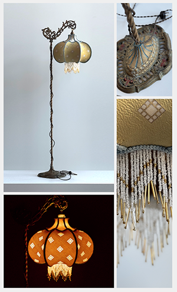
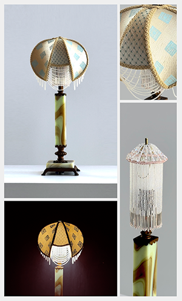
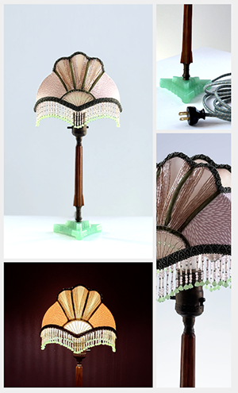
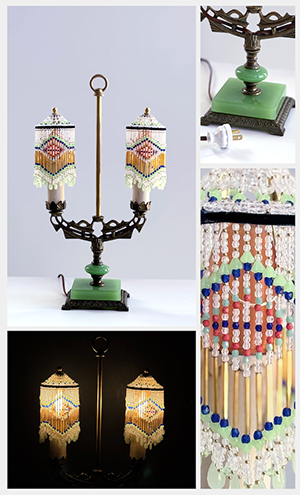

Lamp: Bronze and Brass Bridge Floor Lamp
Shade: Pink and Green Silk

|
Lamp: Cast Iron Bridge Floor Lamp
Shade: Gold Silk with Cut Outs with Vintage Bead Trim

|
Lamp: Uranium Glass Floor Lamp
Shade: Blue Velvet with Czech Glass Beadwork

|
Lamp: Jadeite and Uranium Glass Floor Lamp
Shade: Champagne and Blue Silk

|
Lamp: Uranium Table Floor Lamp
Shade: Hand-printed Champagne Silk with Czech Glass Beadwork

|
Lamp: Jadeite Glass Table Lamp
Shade: Vintage Blue and Pink Silk with Czech Glass Beadwork
|
Lamp: Jadeite and Bakelite Lamp
Shade: Pink Silk with Czech Glass Beadwork

|
Lamp: Jadeite, Bronze, and Brass Double Candlestick Lamp
Shade: Czech Glass Bead Shades

|
Lamp: Brass Edwardian Sconces
Shades: Amber-colored Czech glass bulb covers

|